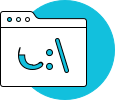
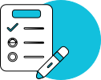
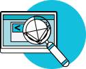

Будешь знать как работать с кодом, на практике

Сможешь определиться с тем, какое IT-направление тебе ближе

Получишь четкий план обучения, чтобы стать веб-разработчиком

Узнаешь, как найти первых заказчиков без фриланс-бирж
Предоставлю список книг и иных ресурсов, которые помогут тебе